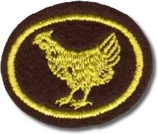
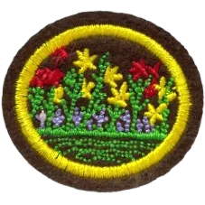
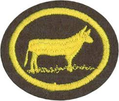

Título Principal da Página
☰
Início
Especialidades
Classes
Ano Bíblico
Eventos
?
Especialidades da área Atividades Agrícolas — clique no botão abaixo para ver o índice completo.
Índice de Especialidades Agrícolas



Voltar para a página principal